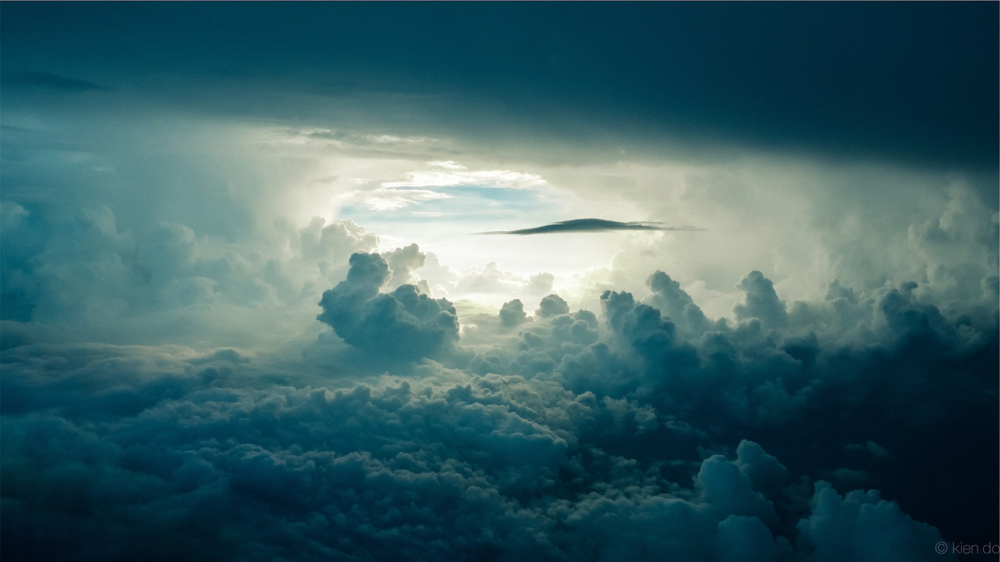

No século I a.C. Lucrécio, dando continuidade às ideias dos primeiros atomistas, escreveu que a luz solar e o seu calor eram compostos de pequenas partículas.
Nos seus trabalhos publicados - o artigo "Nova teoria sobre luz e cores" (1672) (disponível em português em Silva & Martins 1996) e o livro Óptica (Newton 1996) - e também nos trabalhos não publicados - os artigos "Hipótese da luz" e "Discurso sobre as observações" (disponíveis em Cohen & Westfall 2002) - Newton discutiu implicitamente a natureza física da luz, fornecendo alguns argumentos a favor da materialidade da luz. Fato especificamente notório é que, apesar de ser conhecido como o grande defensor da teoria corpuscular, Newton nunca discutiu em detalhes o assunto, sendo sempre cauteloso ao abordá-lo Georg Cantor.[9] A razão desse comportamento seria as críticas recebidas sobre o artigo "Nova teoria sobre a luz e cores" de 1672, advindas principalmente de Robert Hooke, Christiaan Huygens.
No século XVII, Huygens, entre outros, propôs a ideia de que a luz fosse um fenómeno ondulatório. Francesco Maria Grimaldi observou os efeitos de difracção, atualmente conhecidos como associados à natureza ondulatória da luz, em 1665, mas o significado das suas observações não foi entendido naquela época. As experiências de Thomas Young e Augustin Fresnel sobre interferência e difracção no primeiro quarto do século XIX, demonstraram a existência de fenómenos ópticos, para os quais a teoria corpuscular da luz seria inadequada, sendo possíveis se à luz correspondesse um movimento ondulatório. As experiências de Young capacitaram-no a medir o comprimento de onda da luz e Fresnel provou que a propagação rectilínea, tal como os efeitos observados por Grimaldi e outros, podiam ser explicados com base no comportamento de ondas de pequeno comprimento de onda.
O físico francês Jean Bernard Léon Foucault, no século XIX, descobriu que a luz se deslocava mais rápido no ar do que na água. O efeito contrariava a teoria corpuscular de Newton, esta afirmava que a luz deveria ter uma velocidade maior na água do que no ar. James Clerk Maxwell, ainda no século XIX, provou que a velocidade de propagação de uma onda eletromagnética no espaço equivalia à velocidade de propagação da luz de aproximadamente 300 000 km/s.
No final do século XIX, a teoria que afirmava que a natureza da luz era puramente uma onda eletromagnética, (ou seja, a luz tinha um comportamento apenas ondulatório), começou a ser questionada. Ao se tentar teorizar a emissão fotoelétrica, ou a emissão de elétrons quando um condutor tem sobre si a incidência de luz, a teoria ondulatória simplesmente não conseguia explicar o fenômeno, pois entrava em franca contradição. Foi Albert Einstein, usando a ideia de Max Planck, que conseguiu demonstrar que um feixe de luz são pequenos pacotes de energia e estes são os fótons, logo, assim foi explicado o fenômeno da emissão fotoelétrica. A confirmação da descoberta de Einstein se deu no ano de 1911, quando Arthur Compton demonstrou que quando um fóton colide com um elétron, ambos comportam-se como corpos materiais. Assim, podemos afirmar que quando a luz se propaga no espaço, ela se comporta como onda, mas quando incide sobre uma superfície, passa a se comportar como partícula.
As fontes de luz visível dependem essencialmente do movimento de elétrons. Os elétrons nos átomos podem ser elevados de seus estados de energia mais baixa até os de energia mais alta por diversos métodos, tais como aquecendo a substância ou fazendo passar uma corrente elétrica através dela. Quando os elétrons eventualmente retornam a seus níveis mais baixos, os átomos emitem radiação que pode estar na região visível do espectro.
De acordo com a teoria da relatividade restrita, toda radiação eletromagnética, incluindo a luz visível, se propaga no vácuo a uma velocidade constante, comumente chamada de velocidade da luz, que é uma constante da Física, representada por c e é igual a 299 792 458 m/s, equivalente a 1 079 252 849 km/h.
As seguintes quantidades e unidades são utilizadas para medir luz: brilho, medida em watt/cm²; iluminância (Unidade SI: lux); fluxo luminoso (Unidade SI: lúmen); intensidade luminosa (Unidade SI: candela).
A luz é uma onda eletromagnética cuja frequência encontra-se no espectro visível para os seres humanos.
"A luz já foi estudada e interpretada de diversas formas, entre algumas de suas descrições podemos ressaltar a geométrica, a ondulatória e a corpuscular."
"A natureza da luz diz respeito ao que a forma. Ao longo da história da Física, já houveram cientistas que defendiam a natureza ondulatória da luz, como Thomas Young, enquanto outros defendiam a sua natureza corpuscular, como Isaac Newton. Atualmente, após as contribuições dadas pelos físicos Max Planck e Albert Einstein, entende-se que a natureza da luz é dual, isto é: ora ela comporta-se como uma onda, ora como partícula. Esse comportamento, chamado de “dualidade onda partícula”, também é observado em outras partículas quânticas, como os prótons, nêutrons e elétrons."
corpo negro 